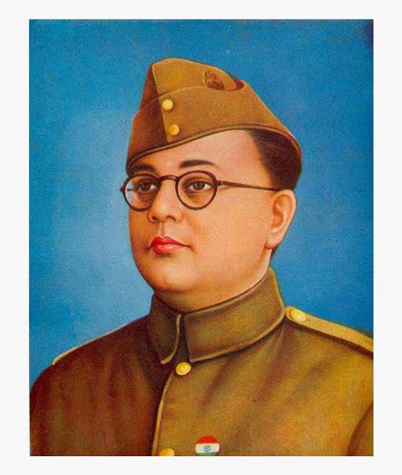
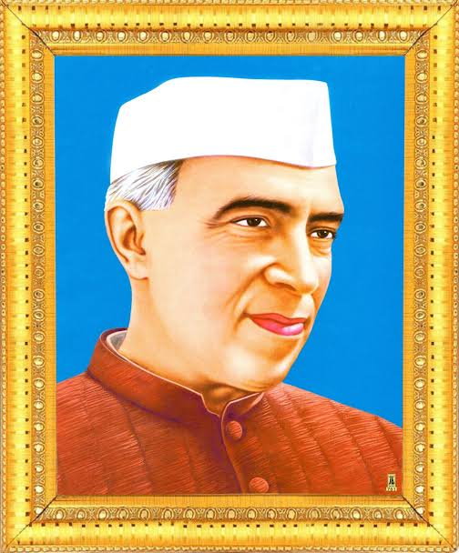

One of the most memorable days in Indian history is 15th August. It’s the day on which the Indian sub-continent got independence after a long struggle. India only has three national festivals that are celebrated by the whole nation as one. One being the Independence Day (15th August) and the other two being Republic Day (26th January) and Gandhi Jayanti (2nd October). After independence, India became the largest democracy in the world. We fought very hard to get our independence from the Britishers. In this essay on Independence Day, we are going to discuss the history and importance of Independence Day.
For almost two centuries the Britishers ruled over us. And the citizen of the country suffered a lot due to these oppressors. British officials treat us like slaves until we manage to fight back against them.
We struggled for our independence but work tirelessly and selflessly under the guidance of our leaders Jawahar Lal Nehru, Subhash Chandra Bose, Mahatma Gandhi, Chandra Shekhar Azad, and Bhagat Singh. Some of these leaders choose the path of violence while some choose non-violence. But the ultimate aim of these was to drive out the Britishers from the country. And on 15th August 1947, the long-awaited dream come true.
To relive the moment and to enjoy the spirit of freedom and independence we celebrate Independence Day. Another reason is to remember the sacrifices and lives we have lost in this struggle. Besides, we celebrated it to remind us that this freedom that we enjoy is earned the hard way.
Apart from that, the celebration wakes up the patriot inside us. Along with celebration, the young generation is acquainted with the struggles of the people who lived at that time.
Although it’s a national holiday the people of the country celebrate it with great enthusiasm. Schools, offices, societies, and colleges celebrate this day by organizing various small and big events.
Every year at Red Fort the Prime Minister of India host the national flag. In the honor of the occasion, 21 gunshots are fired. This is the begging of the main event. This event is later on followed by an army parade.
The school and colleges organize cultural events, fancy dress competitions, speech, debate, and quiz competition.
Every Indian holds a different viewpoint about Indian Independence. For some, it’s a reminder of the long struggle while for youngsters it stands for the glory and honor of the country. Above all, we can see the feeling of patriotism across the country.
The Indian’s celebrate Independence Day with a feeling of nationalism and patriotism across the country. On this day every citizen echoes with festive feeling and pride in the diversity and unity of the people. It’s not only a celebration of Independence but also of the unity in diversity of the country.
Our freedom fighters
subhash chandra bose

Subhas Chandra Bose was an Indian freedom fighter and one of the causes to Indian freedom. He was known as Netaji. He was the President of Indian National Congress (INC) from 1938 to 1939. He attempted to get rid of British rule in India during World War II with the help of Nazi Germany and Imperial Japan.
mahatma gandhi
Mahatma Gandhi was the leader who guided India towards Independence. ... Gandhi returned to India from South Africa in 1915 at the request of Gopal Krishna Gokhale. Gandhi's contribution to the Indian freedom movement cannot be measured in words. He, along with other freedom fighters, compelled the British to leave India.
bhagat singh
Bhagat Singh was a brave freedom fighter and revolutionary of the India Independence movement. His feelings of patriotism were not only restricted against British rule but also towards the division of India on communal lines. ... He was born on 28 September, 1907 in Punjab, India (now Pakistan), to a Sikh family.
sardar vallabh bhai patel
Sardar Vallabhbhai Patel is also known as the Iron Man of India. He is remembered as a very strong and dynamic freedom fighter of India. He had actively contributed to the Indian Freedom Movement. Sardar Patel was one of the most eminent and prominent leaders of the Indian Freedom struggle.
chandra shekhar azad
Chandrashekhar Azad is a name that resonates in each and every household in India as a revolutionary freedom fighter who stood up against the British atrocities. ... He was a patriot and Hindu nationalist who laid down his life for the independence of India.
jawahar lal nehru

Jawaharlal Nehru was an eminent leader of the Indian Independence struggle. Nehru became the congress president in the year 1929. He wrote 'Discovery of India' during his imprisonment in 1942- 46. Nehru became the first PM of India after Independence.